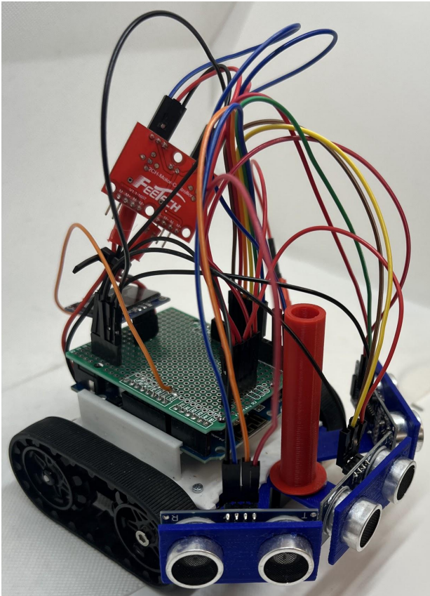

MATLAB · DH Convention
Dobot Robot Arm Kinematics
Derived and validated forward and inverse kinematic models for a 5-DOF serial manipulator using Denavit–Hartenberg convention; confirmed results against simulated motion.
// Mechanical Engineer — Robotics & Control Systems
M.E. in Mechanical Engineering, Control Systems concentration, from Stevens Institute of Technology. I design, build, and control physical systems — from CNC-fabricated thermal hardware to closed-loop mobile robots — and I like getting my hands dirty at every stage, from SolidWorks model to soldered PCB to tuned controller.
01 — About
I finished my Master's in May 2026 with a concentration in Control Systems, on top of a B.E. in Mechanical Engineering with a Green Engineering minor. My coursework and projects sit at the intersection of mechanical design and controls — I'm equally comfortable running a thermal FEA study, tuning a PID loop, or CNC-milling the part that houses both.
M.E., Mechanical Engineering
Control Systems Concentration
Stevens Institute of Technology
May 2026
Autonomous Navigation for Mobile Robots · Mobile Micro-robotic Systems · Modern Control Engineering · Analytical Dynamics
B.E., Mechanical Engineering
Minor in Green Engineering
Stevens Institute of Technology
May 2025
Design of Dynamical Systems · Thermal Engineering · Manufacturing Processes & Systems · Fluid Mechanics · Engineering Economics
02 — Skills
03 — Featured Projects

Mechanical Design · Embedded Control · Navigation
Designed and fabricated a 3D-printed autonomous ground robot integrating a YDLIDAR G4 laser scanner and multiple ultrasonic sensors for real-time obstacle detection. Wrote the path-planning and target-reaching logic in Arduino, streaming live x-y position data over MQTT/Wi-Fi to navigate an outdoor obstacle course.
Thermal Systems · PID Control · CNC Fabrication
Led the mechanical design team building a programmable GC oven capable of ramping to 400°C in under twenty minutes. Modeled and prototyped the enclosure in SolidWorks, then fabricated the inner and outer steel shells via CNC milling, lathe work, riveting, and TIG welding. Implemented and tuned closed-loop PID temperature control on Arduino with heating elements and thermocouples.
MATLAB · Closed-Loop Control · Simulation
Built a closed-loop control system for a simulated differential-drive mobile robot using ultrasonic sensor feedback for environmental awareness. Designed function-based control logic in MATLAB for wall-tracking and obstacle avoidance, validating the controller across thousands of randomized simulated trials.
More Projects
MATLAB · DH Convention
Derived and validated forward and inverse kinematic models for a 5-DOF serial manipulator using Denavit–Hartenberg convention; confirmed results against simulated motion.

SolidWorks · Thermal Design
Designed a microchannel cold plate for multi-chip module thermal management, sizing channel geometry in SolidWorks to meet heat-dissipation targets.

MATLAB · PID/PD Design
Analyzed and redesigned a closed-loop pitch-control architecture for an unmanned submersible via root locus and Bode analysis, then designed PD/PID compensators to meet stability and settling-time specs.
04 — Experience
McGoey, Hauser & Edsall Consulting Engineers, D.P.C. · Milford, PA
05 — Contact
I'm actively looking for full-time opportunities in robotics, controls, automation, or mechanical design. If you have a role that could use a mechanical engineer who's comfortable across the whole stack — CAD to controller — I'd love to hear from you.